St.Gallen Collegium
Solid and its Symposium
Keeping your data under your control
Simon Mayer
University of St.Gallen
Institute of Computer Science
From insight to impact.
The Solid Community Meets in St.Gallen in May 2027
- Solid Symposium 2027, the 5th annual conference on Solid
- 11 and 12 May 2027, SQUARE, University of St.Gallen
- Opens with a public Solid Open Day on digital sovereignty, 10 May
Picture: sosy2027.org
St.Gallen Collegium | Solid and its Symposium | University of St.Gallen
2Why this talk now: the Solid community comes to St.Gallen. SoSy 27 is organised at HSG (FuSo, ICS-HSG, ILE-HSG). Solid is developed in the W3C Solid Community Group. The Open Day on 10 May is for the public and needs no background in the specification; more at the end of the talk.Today, Every Platform Keeps Its Own Copy of Your Data
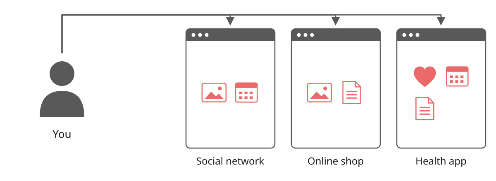
St.Gallen Collegium | Solid and its Symposium | University of St.Gallen
3Each service stores its own copy of your data, under its own terms. You cannot see which copies exist, you cannot correct them in one place, and you cannot take them back.With Solid, Your Data Stays in Your Pod
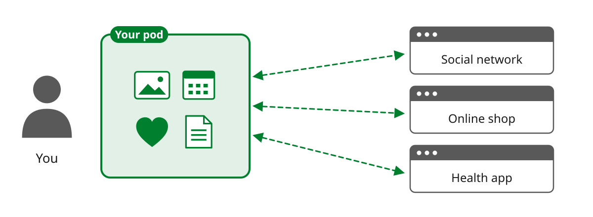
St.Gallen Collegium | Solid and its Symposium | University of St.Gallen
4Solid was started by Tim Berners-Lee. A pod is a personal data store on the Web. Apps no longer keep the data; they read from and write to the pod of the user, with the user's permission. Apps and data are separated.Every Piece of Data Has a Web Address, and So Do You
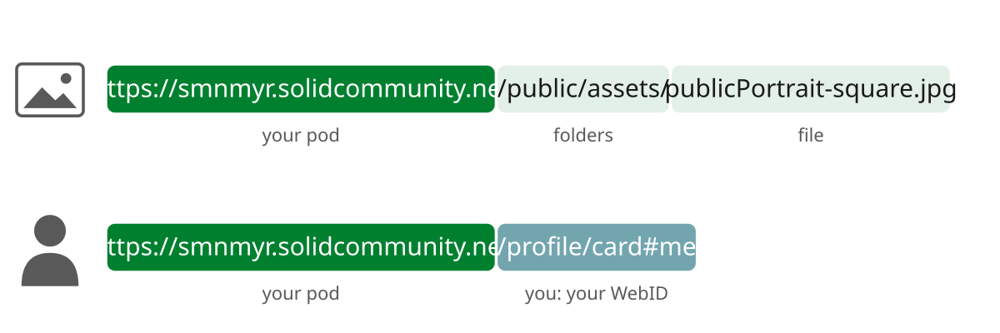
St.Gallen Collegium | Solid and its Symposium | University of St.Gallen
5Solid uses the ordinary Web: each item in the pod is a resource with its own URL. The person also has a URL, the WebID, which is used to log in to any Solid app. These are the real addresses of my pod on solidcommunity.net: open both in the browser.You Decide Who May Read What
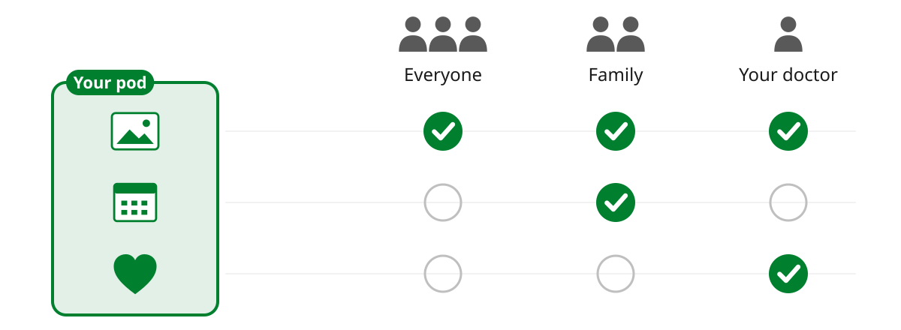
St.Gallen Collegium | Solid and its Symposium | University of St.Gallen
6Access rules are set per file or folder, and refer to people by their WebID or to groups. The owner can change them at any time.Your Pod Checks Every Request
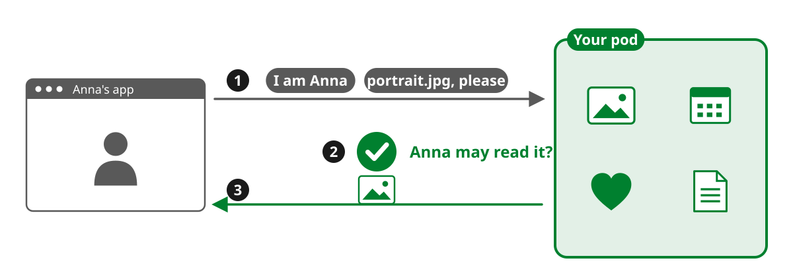
St.Gallen Collegium | Solid and its Symposium | University of St.Gallen
71. The app says who is asking: Anna logs in with her WebID. 2. The pod looks up its access rules. 3. Only if the rules allow it, the pod sends the data; otherwise it refuses.You Choose Who Hosts Your Pod
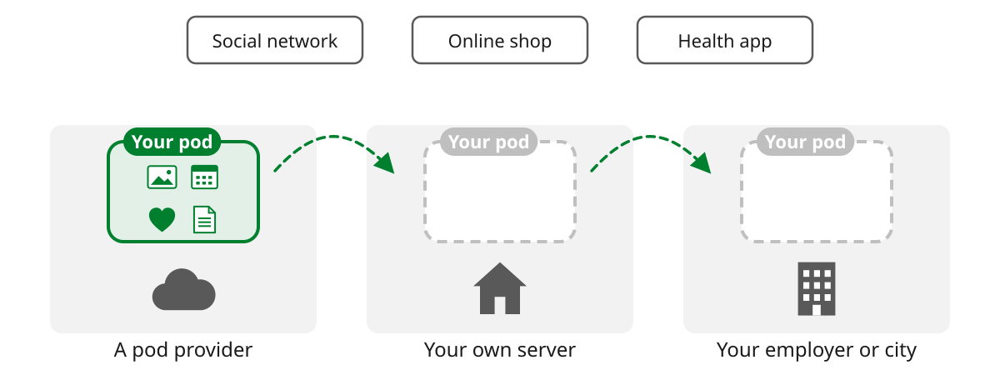
St.Gallen Collegium | Solid and its Symposium | University of St.Gallen
8Solid is an open specification, so any provider, an organisation or you yourself can run a pod server, and every Solid app works with every pod. Moving a pod to another host changes its web addresses; links then need to be updated or redirected.Example 1
Your Photo on
Other People's Websites
The Usual Way: You Send a Copy
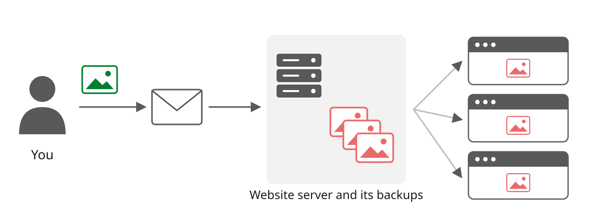
St.Gallen Collegium | Solid and its Symposium | University of St.Gallen
10Once the photo is sent, the website owns the copy. To change or remove it you have to ask, and copies stay in backups and mailboxes.futuresociety.ch: Four Team Photos Come from Pods
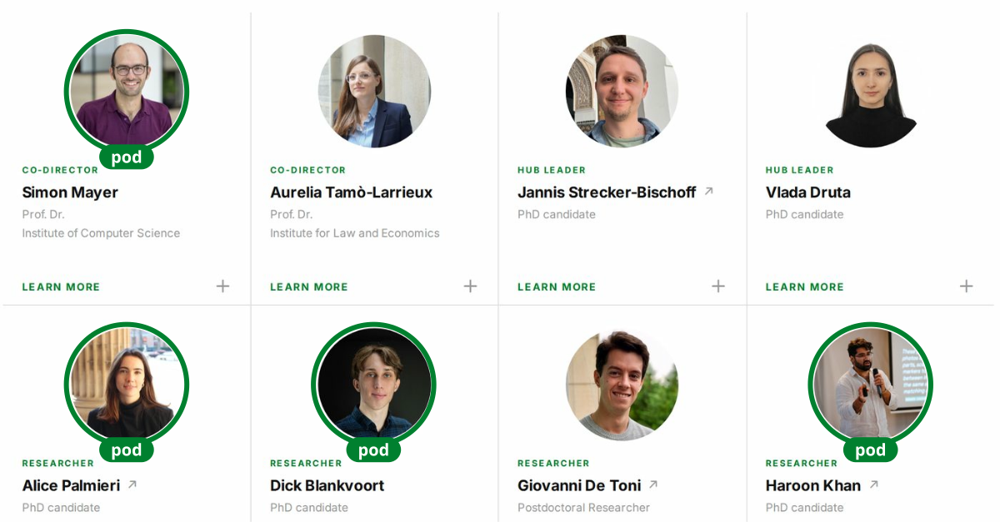
Screenshot of futuresociety.ch, 3 November 2026
St.Gallen Collegium | Solid and its Symposium | University of St.Gallen
11The website of the Future Society Hub. The four marked photos are loaded from the pods of these people: smnmyr.solidcommunity.net, alicepal.solidcommunity.net and datapod.igrant.io (two). Open the site and show it live.The Website Holds Only a Link
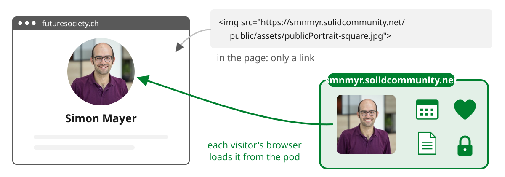
St.Gallen Collegium | Solid and its Symposium | University of St.Gallen
12The page contains the address of the photo in my pod. The web server of futuresociety.ch never stores the photo; each visitor's browser fetches it from the pod.Change the Photo or Withdraw It: Every Website Follows
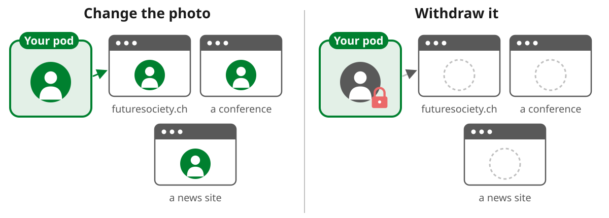
St.Gallen Collegium | Solid and its Symposium | University of St.Gallen
13Demo: replace the photo in the pod, reload futuresociety.ch. Then make it private and reload. Limit: a visitor who already downloaded the photo keeps that copy, and browsers may cache it for a while.Example 2
Computing on
Confidential Data
A Product's Footprint Needs Data from Every Supplier
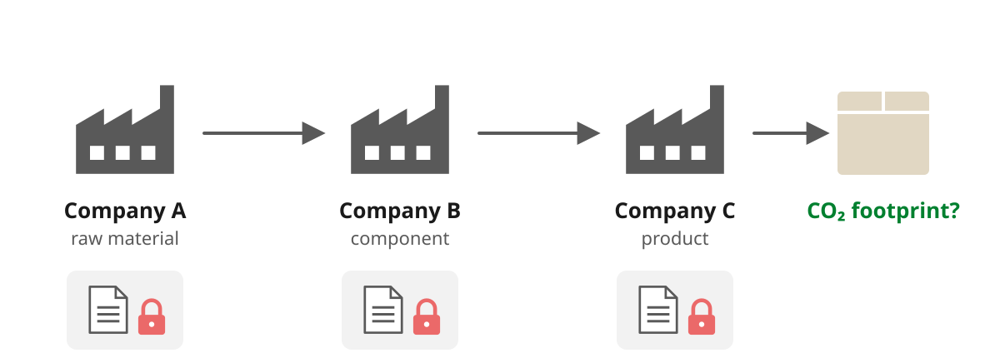
St.Gallen Collegium | Solid and its Symposium | University of St.Gallen
15Scope 3: emissions in the supply chain. They exceed a company's own emissions by a factor of 26 on average (92:1 in retail), but in 2023 only 15% of CDP-disclosing companies had upstream Scope 3 targets (CDP and BCG, 2024). The data is in each company's ERP system, and companies do not share it, since it shows volumes, suppliers and processes.Can Three People Learn Their Average Age without Telling It?
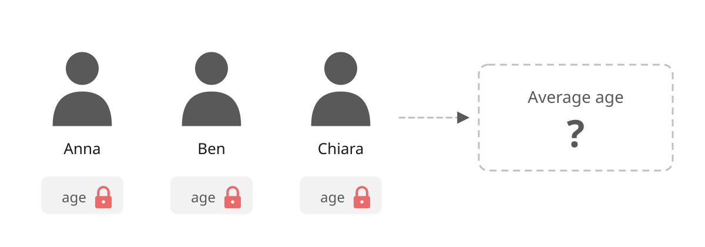
St.Gallen Collegium | Solid and its Symposium | University of St.Gallen
16Secure multi-party computation (SMPC) in its classic example. Three people want to know their average age, and nobody wants to say their own age, not even to a trusted person in the middle. Ask the room: is this possible?Can Three People Learn Their Average Age without Telling It?
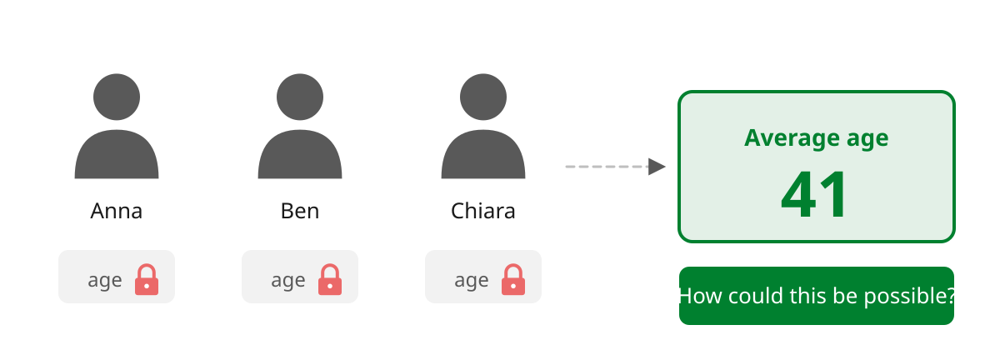
St.Gallen Collegium | Solid and its Symposium | University of St.Gallen
17Next step of the build: the result appears, 41, and the ages stay locked (e.g. 34, 52 and 37; do not show them). Ask: How could this be possible? The next slide shows the trick with two numbers: split each value into random shares, let each server add its shares, and combine only the result. For the average, divide the sum by three.Secret Sharing: Each Server Sees Only Random Numbers
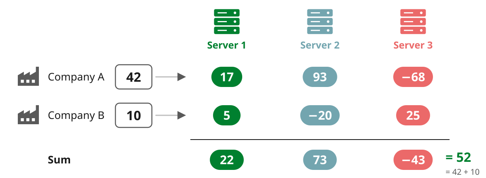
St.Gallen Collegium | Solid and its Symposium | University of St.Gallen
18Secure multi-party computation (SMPC). A single share looks like a random number. Each server computes on its own shares; only the result is put together. As long as the servers do not collude, none of them learns a company's value. Simplified here as a sum with additive shares; the system uses Shamir secret sharing and computes the full life cycle assessment (a matrix computation).Solid Gives Each Server Only Its Own Share
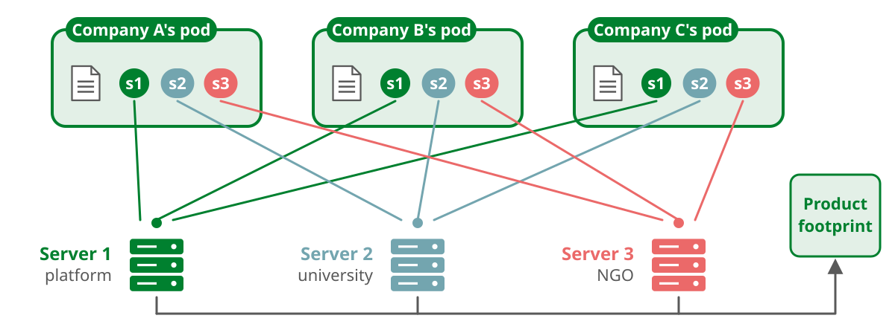
J. Grau, A. Maftun, K. Garcia, S. Mayer: Solid and Secure Multi-Party Computation for a Circular Economy. Solid Symposium 2026
St.Gallen Collegium | Solid and its Symposium | University of St.Gallen
19Jan Grau's work with Empa and Siemens. Each company runs a Solid server next to its ERP system; a sandboxed plugin (WebAssembly) reads the data from the ERP. The company splits its data into shares inside its own Solid environment, and Solid's access rules let server 1 read only share 1, server 2 only share 2, and so on. The servers can be run by different organisations, e.g. the LCA platform GDT, a university and an NGO. So the guarantee that no server sees the complete data is enforced at the data access layer, in addition to the computation protocol.Solid Open Day on Digital Sovereignty, 10 May 2027
- Open to the public, no background needed
- Onboarding: your first Solid pod
- Evening event on digital sovereignty, in German
- sosy2027.org
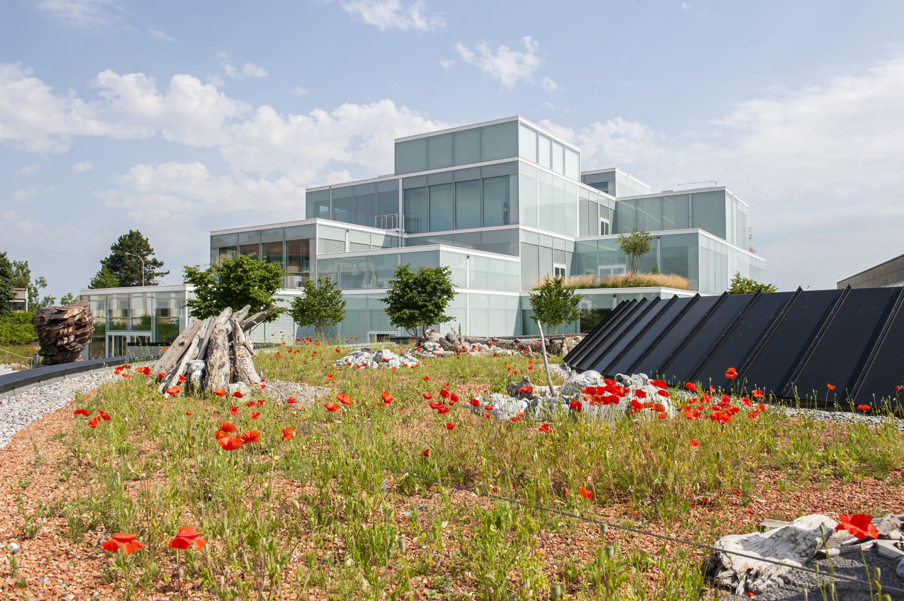
Picture: sosy2027.org
St.Gallen Collegium | Solid and its Symposium | University of St.Gallen
20The 5th Solid Symposium (SoSy 27) comes to St.Gallen. The Open Day on 10 May is the public day on digital sovereignty; members of the Collegium are welcome.Any Questions / Comments / Doubts / Concerns?
Take-Home
- Your data stays in your pod; websites and apps get a link
- You decide who may read each item, and can change it at any time
- Solid can hand out confidential data in shares, so that no server sees all of it
St.Gallen Collegium | Solid and its Symposium | University of St.Gallen
21